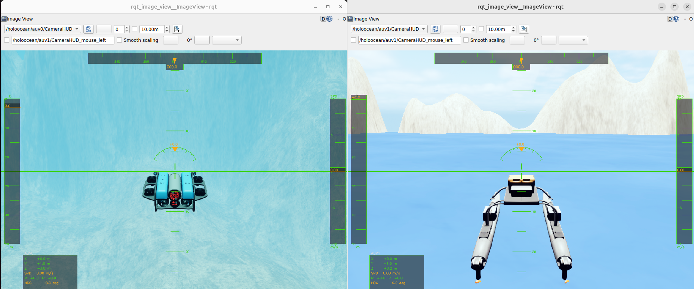
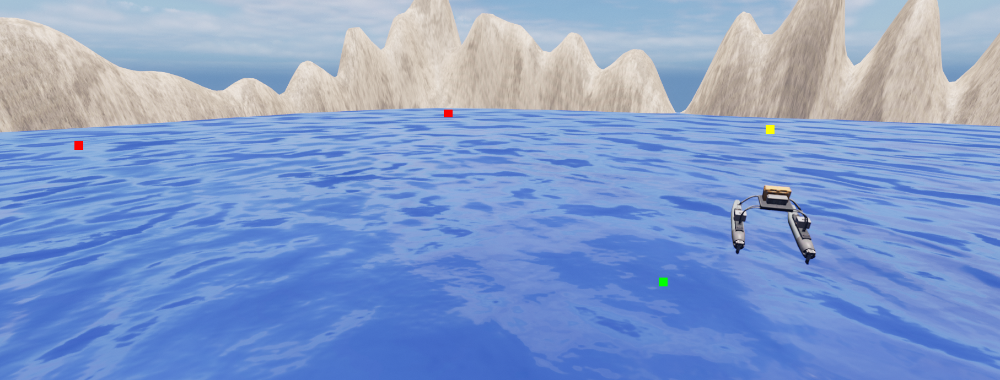

水域载具 ROS2 接口
针对高保真海洋机器人模拟器 HoloOcean 的 ROS 2 集成方案。该软件包把 HoloOcean Python API 接到 ROS 2 网络上：传感器数据以 Topic（话题）发布，控制指令通过 Subscription（订阅）和 Service（服务）接收。
上游项目：byu-holoocean/holoocean-ros。
HoloOcean ROS (0.0.1) 新特性
- 改进了游戏手柄（joystick）示例
- 新增多代理（multi-agent）游戏手柄示例
- 简化代理指令：弃用
command/control话题，改用command/agent - 新增传感器旋转指令
- 修复少量错误并改进 Docker 配置
软件包
| 软件包 | 描述 |
|---|---|
holoocean_main |
核心仿真节点：加载场景 JSON，启动 HoloOcean 并在后台线程中 tick |
holoocean_interfaces |
自定义 ROS 2 消息与服务定义 |
holoocean_examples |
示例节点：手柄控制、航点跟踪、深度/航向/速度指令 |
先决条件
- Ubuntu 22.04 + ROS 2 Humble，或 Ubuntu 24.04 + ROS 2 Jazzy（上游在 Humble 和 Jazzy 上测试过）
- HoloOcean Python 包，以及对应的 Unreal 世界包（有画面和无画面模式都需要场景资源）
- 与 ROS 2 相同版本的 Python；
rclpy是编译扩展，不能和系统 Python 混用 - 可选：NVIDIA GPU 和显示器；无显示器时用
show_viewport: false跑无头模式
关于 Conda： 不建议在 ROS 2 + HoloOcean 的组合里使用 Conda。如果必须使用， 需要在同一个环境里安装与 ROS 2 版本匹配的
rclpy、colcon-common-extensions、catkin_pkg和holoocean，否则会出现rclpy导入失败或 ABI 不匹配。
安装
Docker（推荐）
Docker 方式不需要在本机安装 ROS 2 和 HoloOcean，适合快速复现。参见：
从源码安装
先安装 HoloOcean Python 包（详见 HoloOcean 文档），
然后准备一个 ROS 2 工作空间。下面用稀疏克隆只取 src/water，避免把整个文档仓库
拉下来：
mkdir -p ~/holoocean_ws/src
cd ~/holoocean_ws/src
git clone --depth 1 --filter=blob:none --sparse https://github.com/OpenHUTB/ros2.git
cd ros2
git sparse-checkout set src/water
cd ~/holoocean_ws
编译前先确认 holoocean 能被当前 Python 导入：
python3 -c "import holoocean; print(holoocean.__file__)"
然后编译三个包：
source /opt/ros/humble/setup.bash
colcon build --base-paths src/ros2/src/water \
--packages-select holoocean_interfaces holoocean_main holoocean_examples
source install/setup.bash
如果用的是 Jazzy，把上面两处 humble 换成 jazzy，并把后面的
ros-humble-* 依赖换成 ros-jazzy-*。
如果只想要上游原版包，也可以把 byu-holoocean/holoocean-ros 克隆到
src/holoocean-ros，再把 --base-paths 换成 src/holoocean-ros。
示例节点还需要 joy_linux、cv_bridge 等运行时依赖，按需安装：
sudo apt install ros-humble-joy-linux ros-humble-cv-bridge ros-humble-rqt-image-view
常见安装错误
colcon build 报 ModuleNotFoundError: No module named 'catkin_pkg'：
sudo apt install python3-catkin-pkg
# 或者只装到当前 Python：
python3 -m pip install --user catkin_pkg
这个错误通常来自“系统 ROS 2 的 Python”和“当前激活的 Python”不是同一个。先
which python3、python3 -c "import rclpy" 确认环境，再决定是否使用 Conda。
快速入门
source ~/holoocean_ws/install/setup.bash
ros2 launch holoocean_main holoocean_launch.py
launch 默认做三件事：
- 命名空间设为
holoocean - 加载
holoocean_main/config/ros_params.yaml - 默认场景是
config/torpedo_fossen.json，并打开 Unreal 视窗
启动后另开一个终端验证：
ros2 node list | grep holoocean
ros2 topic list | grep holoocean
ros2 topic echo /clock --once
ros2 service list | grep -E 'reset|control_mode'
正常情况下能看到 holoocean_node、/holoocean/command/agent 等话题、
/clock 以及 reset、control_mode 两个服务。第一次启动要加载 Unreal 场景，
可能需要几十秒。
无显示器时，把 config/ros_params.yaml 里的 show_viewport 改成 false，或者直接
运行节点并覆盖参数：
ros2 run holoocean_main holoocean_node --ros-args \
-p show_viewport:=false -p scenario_path:=config/torpedo_fossen.json
示例
操纵杆控制
使用 joy_linux 包通过手柄控制 HoloOcean 中的代理：
ros2 launch holoocean_examples joy_launch.py
完整按键映射和配置见水域载具示例。

航点跟踪
根据预设航点列表控制水面船舶：
ros2 launch holoocean_examples waypoint_launch.py

深度、航向及速度指令
利用 Fossen 控制器向鱼雷型 AUV 发送深度、航向和速度指令：
ros2 launch holoocean_examples command_launch.py
节点引用：holoocean_node
加载场景 JSON 文件，启动 HoloOcean 环境，并在后台线程中持续 tick。下面的话题和
服务名都是节点命名空间内的相对名称；launch 默认命名空间是 holoocean，
完整名称要加 /holoocean/ 前缀（/clock 是绝对话题，见下）。
订阅的话题
| 话题 | 类型 | 描述 |
|---|---|---|
command/agent |
AgentCommand |
所有代理的推进器/执行器指令。frame_id 必须是代理名（如 auv0）；节点把 frame_id 直接当代理名，只有该代理在 fossen_agents 中才路由到 set_u_control，设成 body 不会命中 |
command/sensor |
SensorCommand |
传感器配置指令（例如摄像头旋转） |
depth |
DesiredCommand |
自动驾驶模式的深度设定值 |
heading |
DesiredCommand |
自动驾驶模式的航向设定值 |
speed |
DesiredCommand |
自动驾驶模式的速度设定值 |
debug/points |
visualization_msgs/Marker |
在仿真中绘制的调试点 |
发布的话题
| 话题 | 类型 | 描述 |
|---|---|---|
<agent>/<SensorName> |
取决于传感器 | 每个代理的传感器数据 |
/clock |
rosgraph_msgs/Clock |
仿真时间（绝对话题） |
传感器话题名遵循 <agent_name>/<sensor_name>；如果场景 JSON 没有给传感器命名，
默认使用传感器类型名。
服务
| 服务 | 类型 | 描述 |
|---|---|---|
reset |
std_srvs/Trigger |
重置仿真环境 |
control_mode |
SetControlMode |
更改代理的控制模式 |
SetControlMode 请求：
| 字段 | 类型 | 说明 |
|---|---|---|
vehicle_name |
string |
代理名（场景 JSON 里的 key） |
mode |
int32 |
0 = manualControl，1 = depthHeadingAutopilot，2 = headingAutopilot，3 = depthAutopilot |
参数
| 参数 | 类型 | 默认值 | 描述 |
|---|---|---|---|
scenario_path |
string | "" |
场景 JSON 路径；launch 的 params 文件默认 config/torpedo_fossen.json。直接运行节点时必须提供，空值会抛 ValueError |
relative_path |
bool | true |
相对于 holoocean_main 的 share 目录解析 scenario_path |
show_viewport |
bool | true |
显示 Unreal 视窗 |
draw_arrow |
bool | true |
给每个 Fossen 代理画朝向箭头 |
draw_waypoints |
bool | false |
预留参数，当前未使用：节点只声明/读取，未传给 HolooceanInterface，不会实际绘制航点 |
render_quality |
int | -1 |
渲染质量：0 = 低，1 = 普通，2 = 高；-1 = 默认 |
publish_commands |
bool | true |
把计算出的控制面指令发布回 ROS |
消息字段
| 消息 | 字段 | 说明 |
|---|---|---|
AgentCommand |
header.frame_id、float64[] command |
frame_id 是代理名；command 长度由载具控制方案决定 |
SensorCommand |
agent_name、sensor_name、float64[3] rotation |
rotation 为 [roll, pitch, yaw] |
DesiredCommand |
header.frame_id、float64 data |
深度单位 m，航向单位度（NWU，-180~180），速度单位 RPM |
记录传感器数据
ros2 bag record /holoocean/auv0/RotationSensor /holoocean/auv0/LocationSensor
话题名取决于场景 JSON 里的代理名和传感器名。回放时如果要使用仿真时间：
ros2 bag play <bag> --clock
更多用法见 ROS 2 bag 文档。
常见问题
| 现象 | 原因 / 处理 |
|---|---|
ModuleNotFoundError: catkin_pkg |
安装 python3-catkin-pkg，或确认当前 python3 就是 ROS 2 使用的 Python |
Package 'holoocean_main' not found |
没有 source install/setup.bash，或三个包没有编译成功 |
ModuleNotFoundError: holoocean |
HoloOcean Python 包没装，或装到了另一个 Python 环境 |
The 'scenario_path' parameter cannot be blank |
直接 ros2 run 时没有传 scenario_path；用 launch 的 params 文件或显式 -p scenario_path:=... |
| 启动后没有画面 | 检查 show_viewport、显卡驱动和 DISPLAY；无头模式本来就看不到视窗 |
rclpy 导入失败或 ABI 错误 |
混用了 Conda/系统 Python；统一到 ROS 2 对应的 Python |
| 手柄没有反应 | 检查 /dev/input/js0 权限，以及 joy_linux 节点是否在跑 |
| 仿真时间和实际时间不一致 | 正常现象，用 /clock 和 use_sim_time 同步节点 |
注意
- 仿真时间可能比实际时间（wall time）快或慢，节点应使用
/clock订阅仿真时间， 并设置use_sim_time:=true。 - HoloOcean 世界包体积较大，首次启动加载时间长；不要把它放在网盘挂载目录里直接跑。
- 修改代码后重新
colcon build并重新source install/setup.bash，否则运行的还是旧版本。
参考与引用
如果在本项目或 HoloOcean 上做研究，请引用：
@inproceedings{meyers2025testing,
title={Testing and Evaluation of Underwater Vehicle Using Hardware-in-the-Loop Simulation with HoloOcean},
author={Meyers, Braden and Mangelson, Joshua G.},
booktitle={OCEANS 2025-Great Lakes},
pages={1--8},
year={2025},
organization={IEEE}
}
上游项目由 Brigham Young University 的 FRoStLab (Field Robotic Systems Lab) 开发。